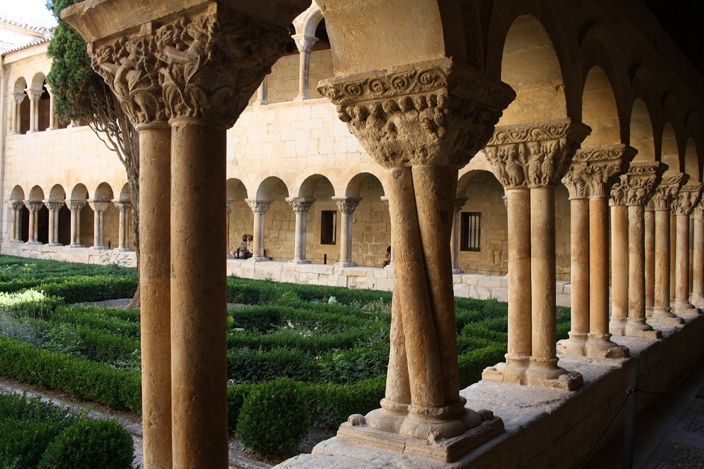
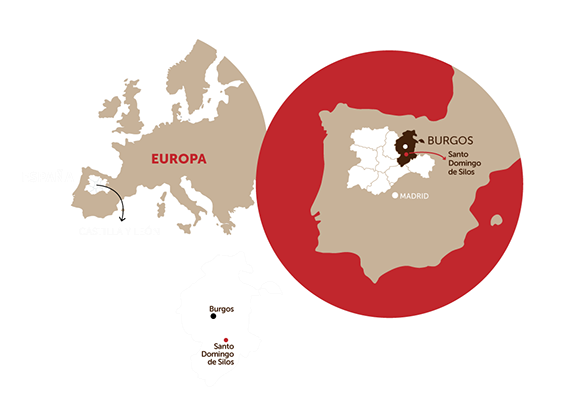
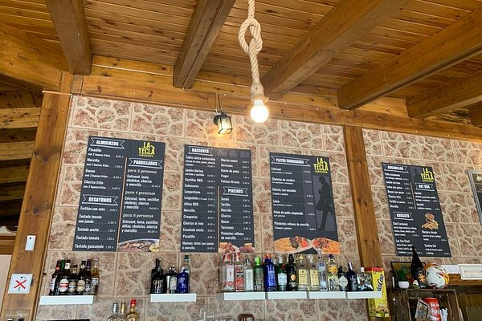

Historia de Santo Domingo de Silos
Santo Domingo de Silos, situado en la provincia de Burgos, tiene sus orígenes en la época visigoda y fue un importante centro monástico desde la Edad Media. La fundación del monasterio en el siglo VII marcó un antes y un después en su historia, convirtiéndose en un centro cultural, religioso y artístico. Durante la Reconquista, Silos adquirió relevancia estratégica y cultural, y en los siglos posteriores, su monasterio fue un referente del arte románico en España. El monasterio, construido principalmente en el siglo XI, destaca por su impresionante arquitectura y sus frescos, algunos de los cuales aún conservan su belleza original. A lo largo de los siglos, el lugar ha sido testigo de numerosos eventos históricos, incluyendo su papel como refugio y centro de cultura. En tiempos modernos, Silos ha conservado su carácter medieval y monástico, atrayendo turistas, peregrinos y amantes del arte y la historia. La comunidad local mantiene viva su tradición religiosa y cultural, celebrando festividades y actividades que honran su rico patrimonio. La economía del pueblo se ha consolidado en torno al turismo, la agricultura y la producción de vino, aprovechando la belleza del entorno natural y su legado artístico. La conservación del monasterio y la promoción de rutas de senderismo y turismo cultural hacen de Silos un destino imprescindible en la provincia de Burgos.
Silos en el mapa
¿Dónde comer en Santo Domingo de Silos?
- Restaurante Santo Domingo de Silos: Cocina tradicional castellana y vinos locales. 
- Restaurante Asador Emeterio: Menús caseros y alojamiento cercano.
- Restaurante Casa de Guzmán: Snacks, desayunos y dulces típicos.
.jpg)
.jpg)